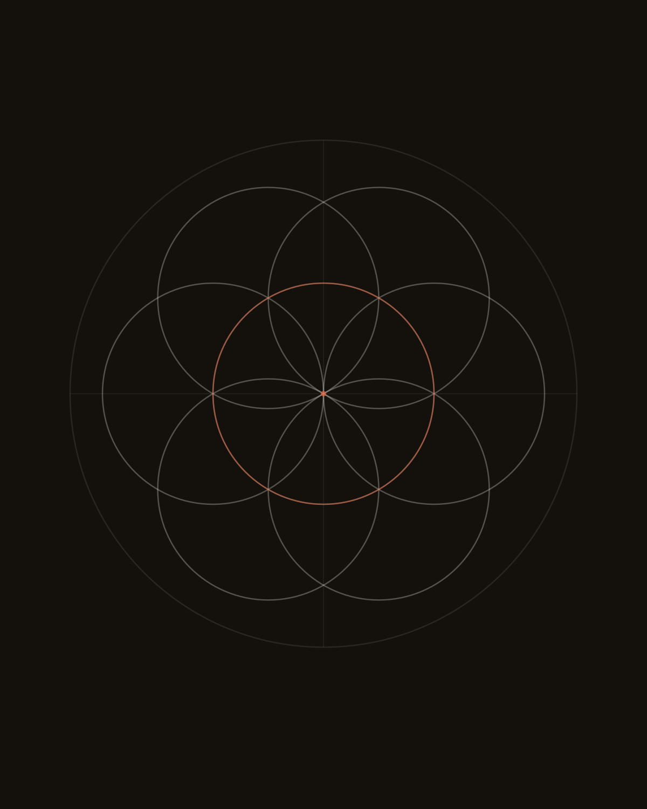
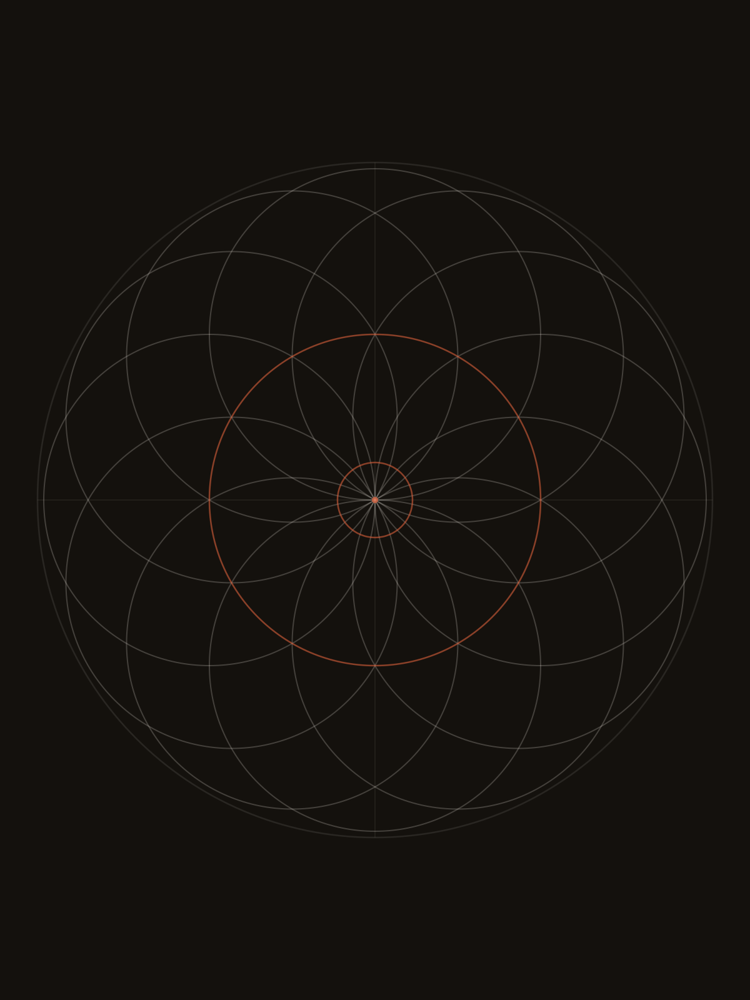
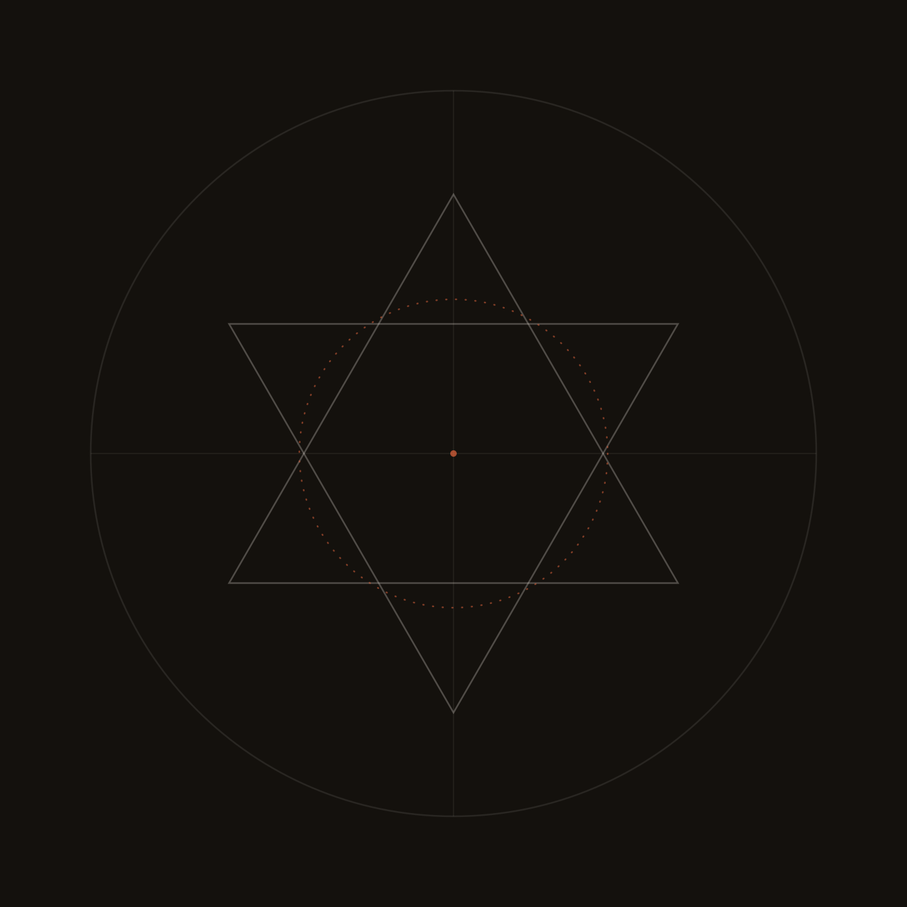
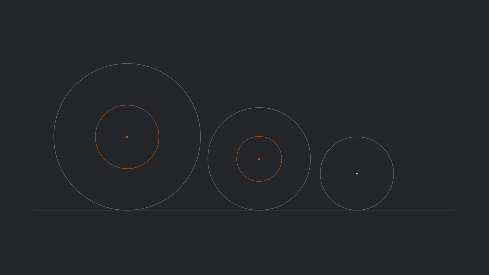
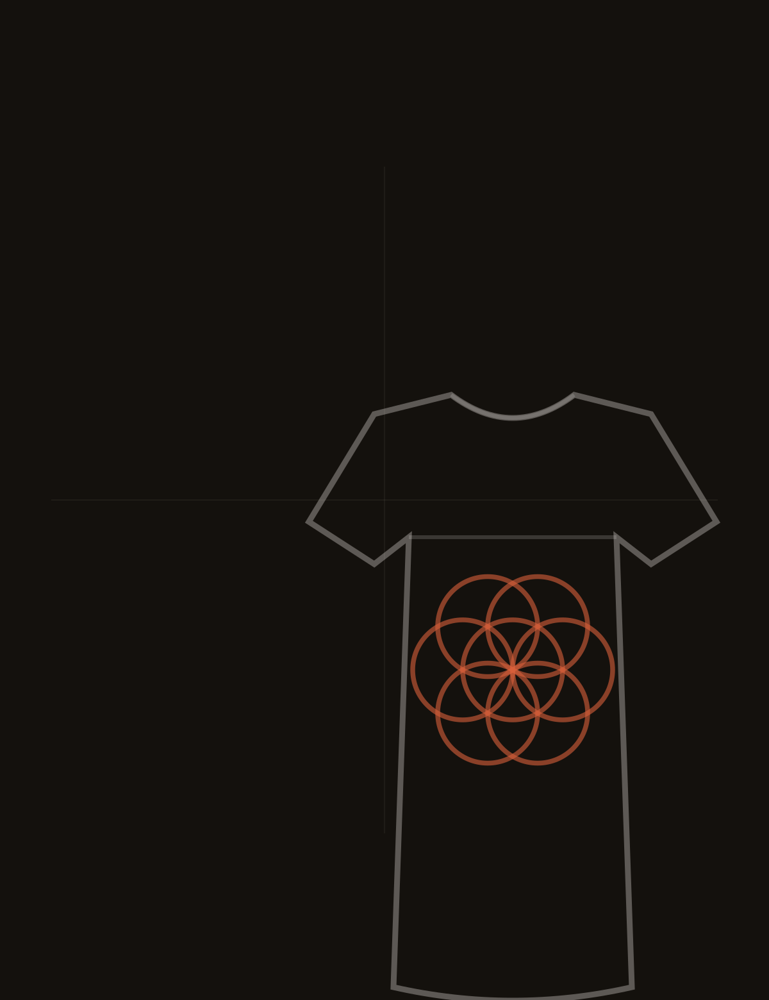
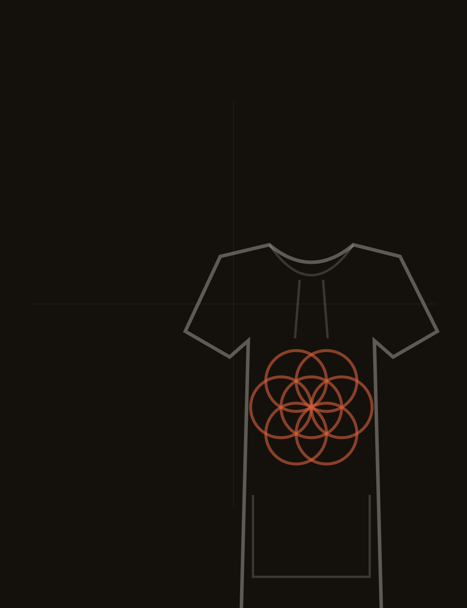
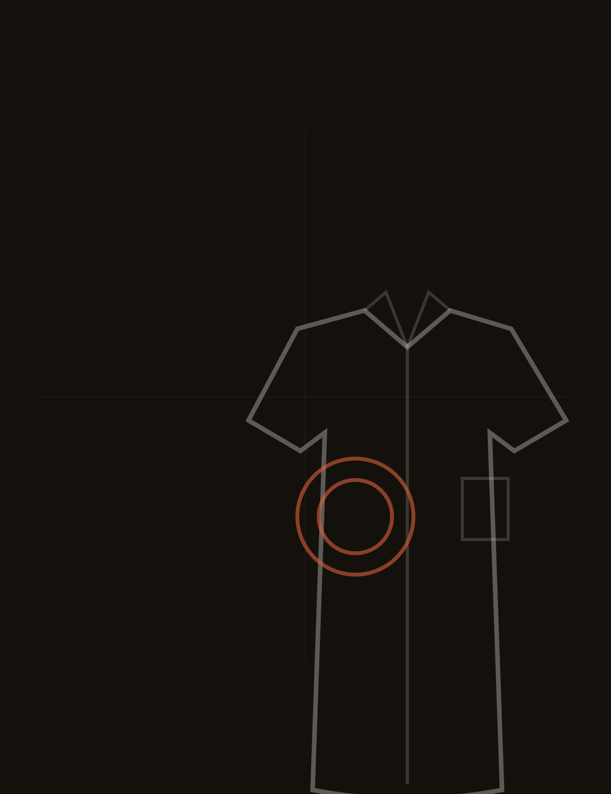

Ilustración · geometría sagrada · naturalismo
Compás,
tinta
y fuego.
Dibujo con línea fina desde dos puntos fijos: la proporción de la geometría sagrada y la forma observada del natural. La misma línea se traza en papel, se tatúa en piel, se quema en madera y se imprime en tela.
- Tatuaje
- Cuadro
- Mural
- Pirograbado
- Textil
Obra
01 — Obra
Cuatro técnicas, un mismo trazo








Todo empieza con un círculo y un centro.Lo que sigue es paciencia.
02 — Serie textil
Prototipos
Básicos ilustrados
Primera serie de indumentaria: piezas básicas semi casuales con ilustración digital aplicada. La geometría cambia de escala y se vuelve estampa.






Serie en desarrollo · moldes y estampas en ajuste
03 — Sobre
Dos ideas fijas: la proporción y la hoja.
Trabajo sobre papel con compás, regla y tinta. La geometría sagrada me da el orden: círculos que se cruzan, ejes que dividen, tramas que crecen desde un centro. El naturalismo me devuelve el desorden: una nervadura, una semilla, una hoja que no cierra perfecta.
Ese cruce sostiene todo lo que hago. En el tatuaje se vuelve línea que respira con el cuerpo. En el cuadro y el mural, escala y espacio. En el pirograbado, calor en lugar de tinta: la línea se quema y queda.
- Compás
- Toda forma sale de un centro y un radio. Nada se dibuja sin trazar antes la construcción.
- Observación
- Antes de dibujar, miro la planta hasta encontrar su lógica: dónde nace la nervadura, cómo gira el tallo.
- Fuego
- El pirógrafo fija la línea sin tinta. La madera cambia de color y el trazo queda con su borde quemado.
04 — Encargos
Boceto previo
Qué se puede encargar
- Tatuaje
Diseño original para tu pieza, pensado para el lugar del cuerpo donde va a vivir. Línea fina, geometría y formas naturales.
- Cuadro
Tinta y grafito sobre papel de algodón. Pieza única, montada y firmada.
- Mural
Interior o exterior. Composición trazada sobre la pared, adaptada a la luz y a la arquitectura del espacio.
- Pirograbado
Madera y cuero. La línea se quema, no se pinta: cada trazo es definitivo.
- Ilustración textil
Estampas y motivos para prendas, series cortas y colaboraciones.
Cada encargo empieza con una conversación sobre soporte, medida y tiempos.